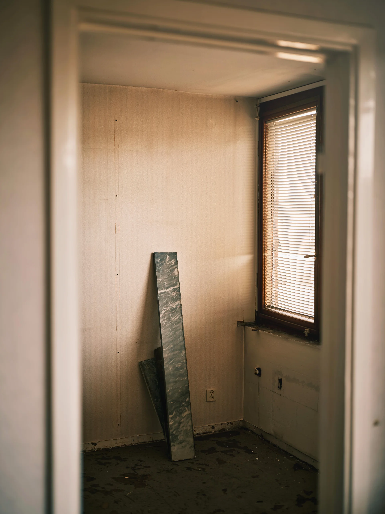
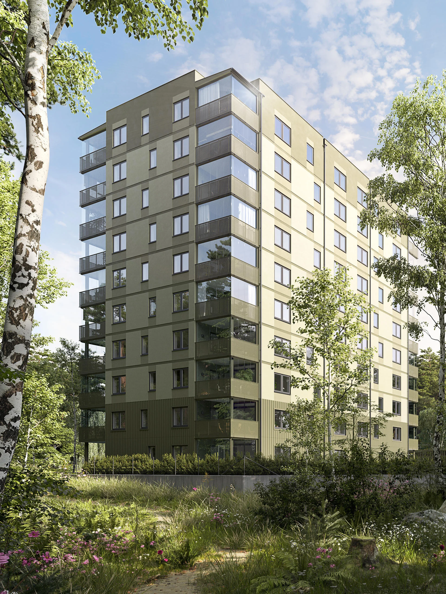

Se projektetSten Sturegatan
97 hyresrätter samt restaurang, butik & kontor · Wallenstam
Från byggdelar till ett helt kvarter.

204 hyresrätter i tre hus med fem trapphus. I nära samarbete med UBAB har BYGR utvecklat lösningar för projektets genomförande. Uppdragsgivare är Arwidsro. Bildserien visar byggskedet och materialens väg genom produktionen.

Se projektet97 hyresrätter samt restaurang, butik & kontor · Wallenstam

Se projektet45 st bostadsrätter · HP Bostäder
En idé, en fastighet eller ett konkret projekt?
Låt oss prata om vad vi kan åstadkomma tillsammans.